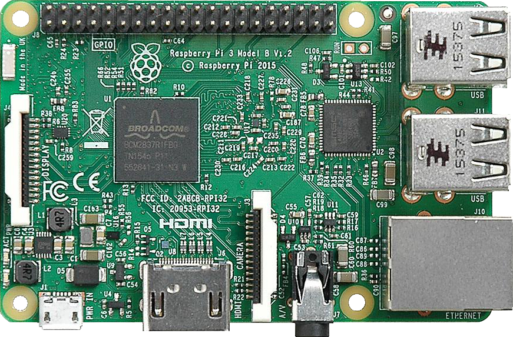
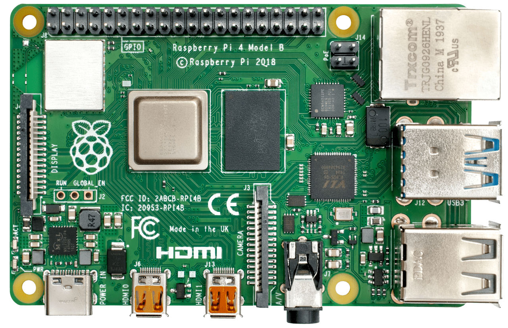
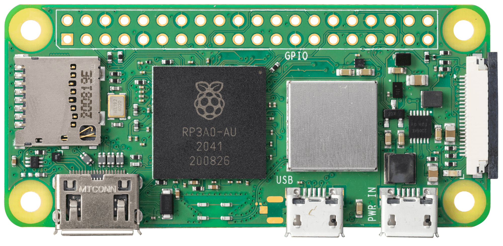
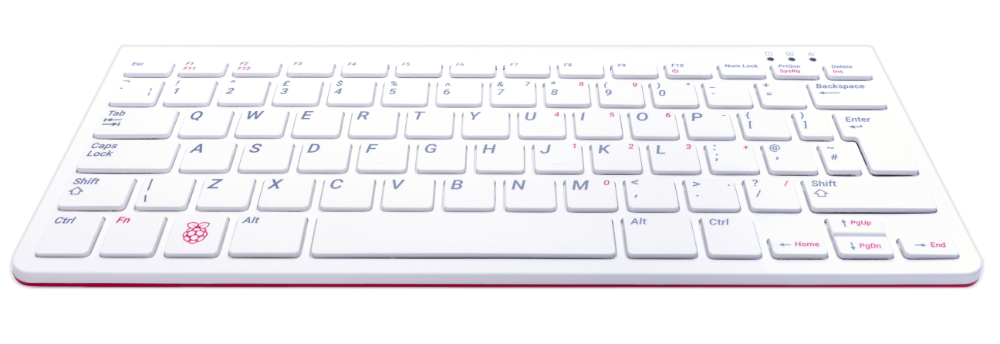

Raspberry Pi. Mucho poder en muy poco espacio.
Información
En esta página web se puede encontrar información sobre las distintas versiones de la Raspberry Pi, así como información sobre su funcionamiento y sus características.
La Raspberry Pi es una serie de ordenadores de placa reducida, ordenadores de placa única u ordenadores de placa simple (SBC) de bajo costo desarrollado en el Reino Unido por la Raspberry Pi Foundation, con el objetivo de poner en manos de las personas de todo el mundo el poder de la informática y la creación digital. Si bien el modelo original buscaba la promoción de la enseñanza de informática en las escuelas, este acabó siendo más popular de lo que se esperaba, hasta incluso vendiéndose fuera del mercado objetivo para usos como robótica.
Enlaces de interés ¿Un vistazo?
Raspberry Pi 3
Raspberry Pi 4
Raspberry Pi Zero
Raspberry Pi 400
| Nombre | Procesador | RAM | Fecha de lanzamiento | Precio | Enlace | Detalle |
|---|---|---|---|---|---|---|
| Raspberry Pi 3 | Quad Core 1.2GHz Broadcom BCM2837 64bit | 1GB | 29 de febrero de 2012 | 35 € | Aquí | Aquí |
| Raspberry Pi 4 | Broadcom BCM2711, Quad core Cortex-A72 (ARM v8) 64-bit SoC @ 1.5GHz | 2GB/4GB/8GB | 24 de Junio de 2019 | +35 € | Aquí | Aquí |
| Raspberry Pi Zero v2 | 64-bit Quad-core SoC (Arm Cortex-a53) Broadcom BCM2710A1 | 512 MB | N/A | 15 € | Aquí | Aquí |
| Raspberry Pi 400 | Broadcom BCM2711, Quad core Cortex-A72 (ARM v8) 64-bit SoC @ 1.5GHz | 2GB/4GB/8GB | Noviembre de 2020 | 90 € | Aquí | Aquí |